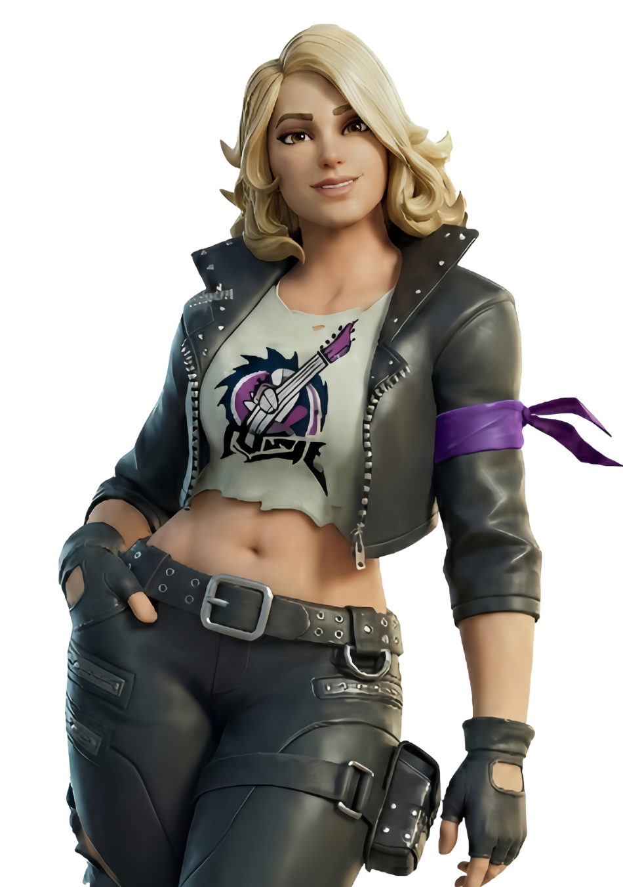
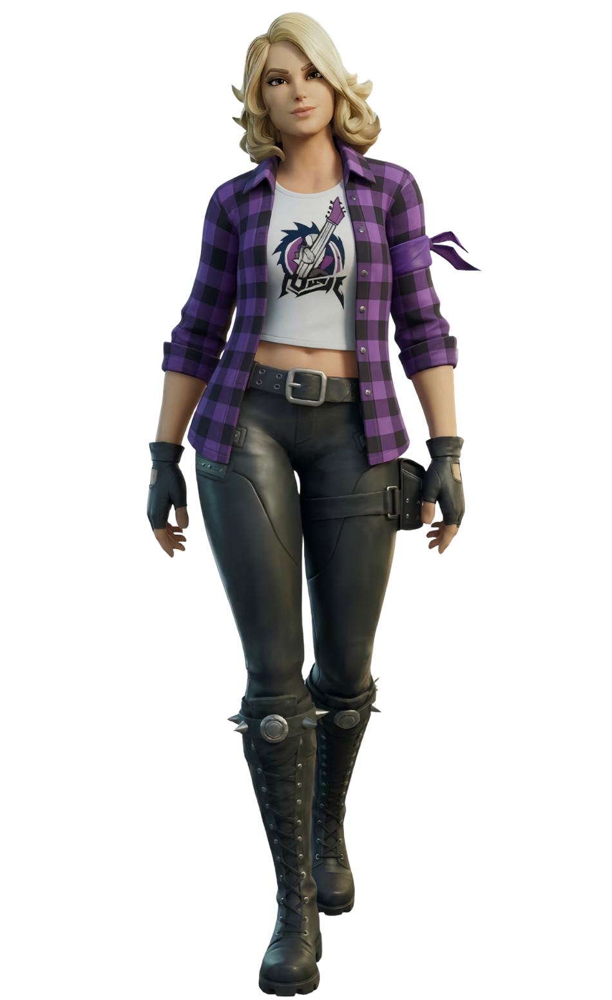
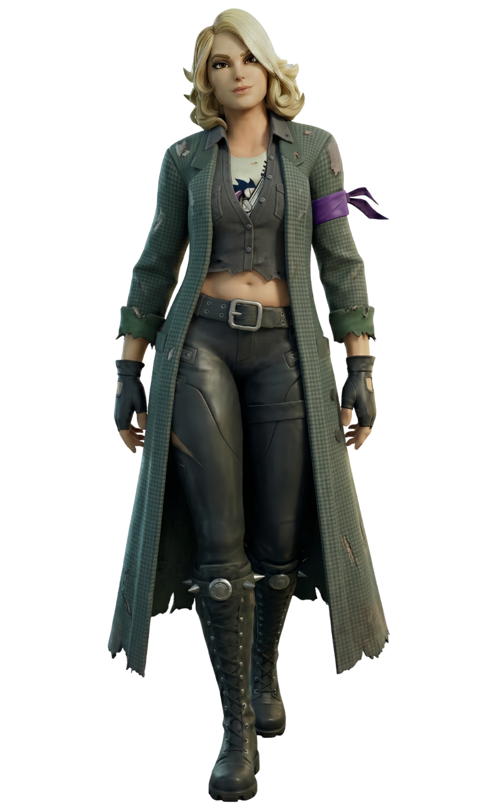
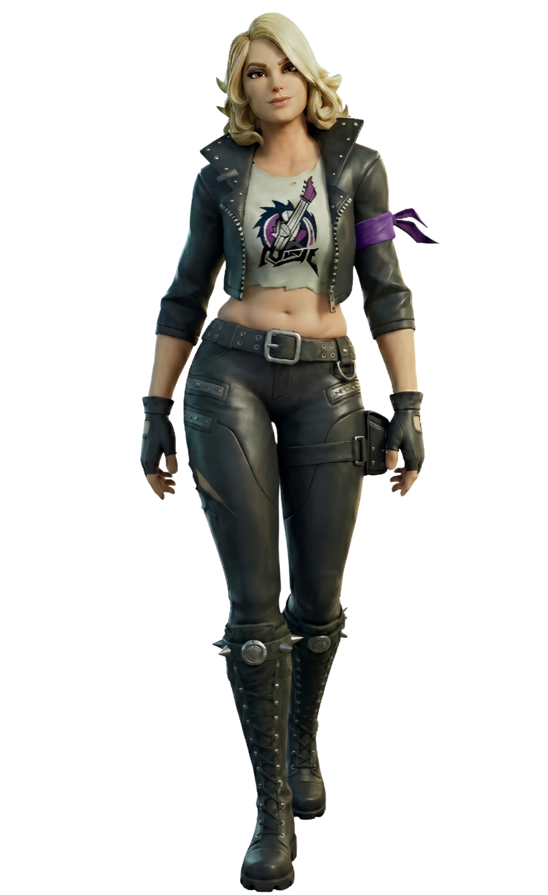
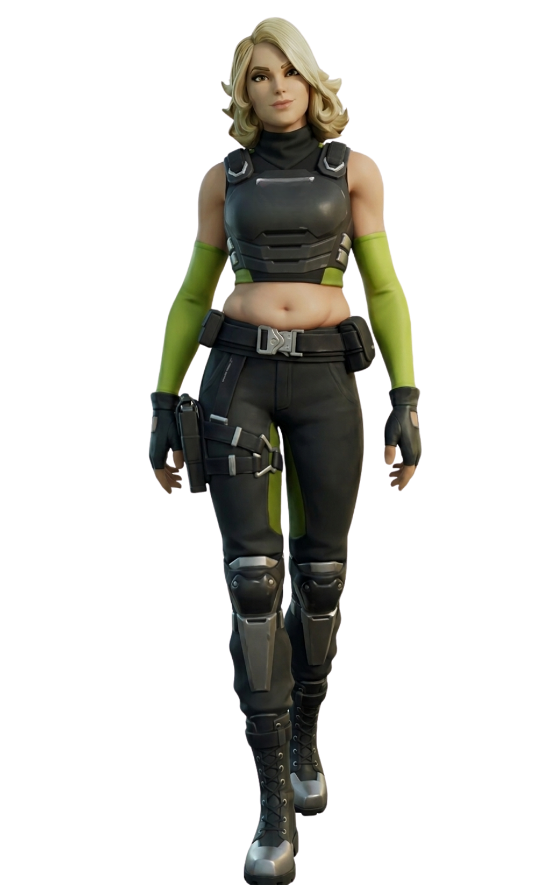

Adriane
// Archives Biographiques
L'Égarée
Ancienne chercheuse dont les amis ont été aspirés par un portail expérimental, Adriane a erré seule à travers les réalités pour les retrouver. Rongée par la solitude et l'amertume, elle rejette d'abord le Clan du Soleil sur l'Archipel Ultime. Cependant, son besoin désespéré d'utiliser le Point Zéro la force à s'allier à eux. Touchée par la bienveillance de Scarlet malgré des débuts très houleux, elle finit par s'ouvrir à ces autres survivants, trouvant un réconfort inattendu et de précieux alliés pour poursuivre sa quête.
// Variantes Visuelles



